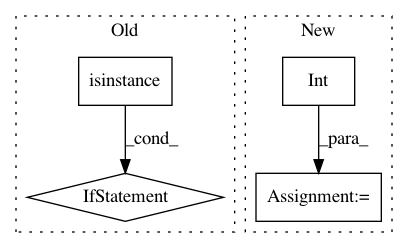

0f2f31b4fef8bbc4fb18e52bc3c376a725f13939,infcomp/modules.py,Artifact,loss,#Artifact#Any#,344
Before Change
logpdf += log_one_minus_probabilities[b]
elif isinstance(proposal, DiscreteProposal):
util.log_error("Unimplemented")
elif isinstance(proposal, CategoricalProposal):
util.log_error("Unimplemented")
else:
util.log_error("Unsupported proposal distribution: " + proposal_type)
After Change
log_weights = torch.log(proposal_output + util.epsilon)
for b in range(sub_batch_size):
value = sub_batch[b].samples[time_step].value[0]
logpdf += log_weights[b, int(value)]
elif isinstance(distribution, Categorical):
util.log_error("Unimplemented")
else:
util.log_error("Unsupported distribution: " + distribution.name())
In pattern: SUPERPATTERN
Frequency: 4
Non-data size: 4
Instances
Project Name: pyprob/pyprob
Commit Name: 0f2f31b4fef8bbc4fb18e52bc3c376a725f13939
Time: 2017-04-22
Author: atilimgunes.baydin@gmail.com
File Name: infcomp/modules.py
Class Name: Artifact
Method Name: loss
Project Name: autonomio/talos
Commit Name: 34a1ac4825d334c79ba59f6a28725d1f87e93dc4
Time: 2019-07-29
Author: mailme@mikkokotila.com
File Name: talos/model/early_stopper.py
Class Name:
Method Name: early_stopper
Project Name: rusty1s/pytorch_geometric
Commit Name: 7590f06cd0d1d3c062702fafdce61132cae97f13
Time: 2018-11-28
Author: matthias.fey@tu-dortmund.de
File Name: torch_geometric/utils/one_hot.py
Class Name:
Method Name: one_hot
Project Name: prody/ProDy
Commit Name: e670665ba5ee96899669c7a0a619eafd89e55a7a
Time: 2013-09-06
Author: lordnapi@gmail.com
File Name: lib/prody/dynamics/nma.py
Class Name: NMA
Method Name: __getitem__